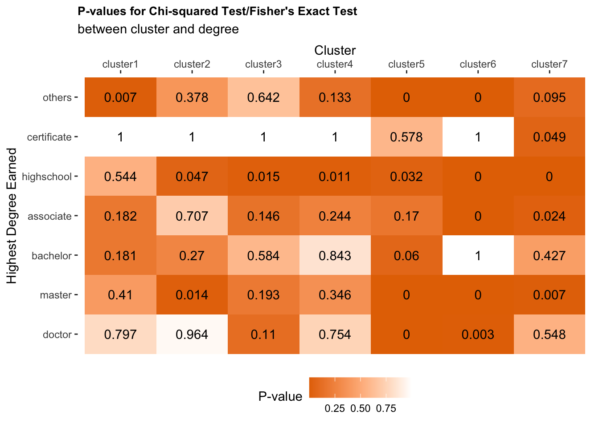
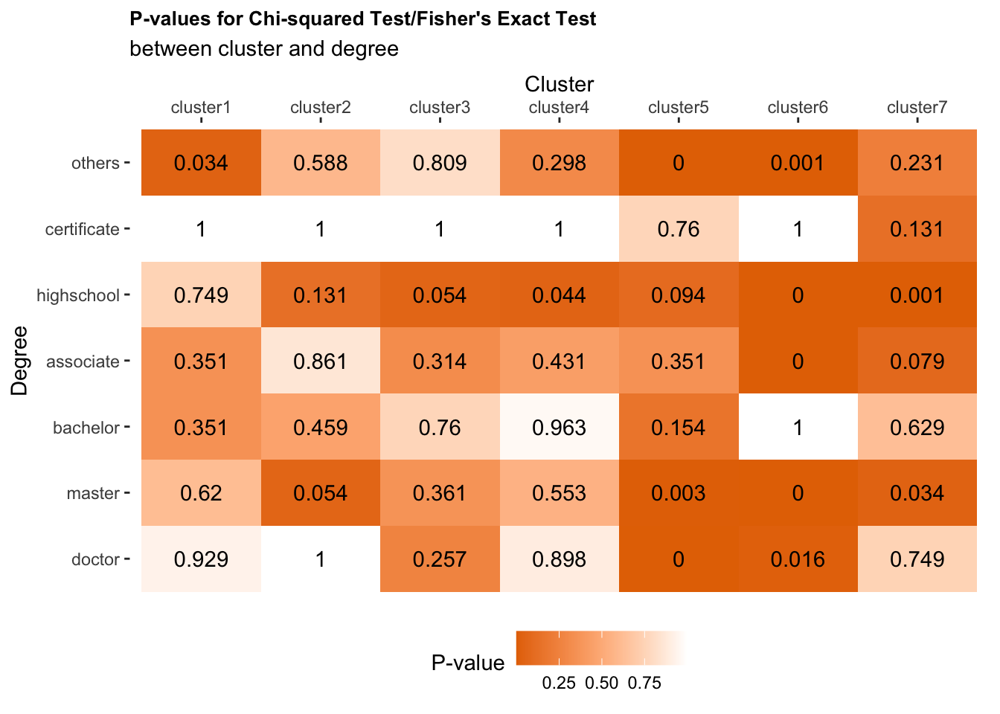

Sequence Clustering
Clustering post-military veteran career sequences and exploring these results
In the previous Sequence Exploration, we introduced the following sequence state naming system, shown in Table 1.
\[\text{Table 1. Overview of Sequence States}\]Year-to-Year Transition Matrix
In the sequence analysis, we want to categorize sequential pattern of the job levels. One approach for categorizing sequences is to compute the distance between two sequences. For example, we have two job state sequences and each sequence is composed of three states: \[S_1 = \{ \text{zone 1, zone 2, zone 3} \}\] \[S_2 = \{ \text{zone 1, zone 1, zone 3} \}\] The difference between \(S_1\) and \(S_2\) is at the second state where \(S_1\) has zone 2 while \(S_2\) has zone 1. To transform \(S_1\) to \(S_2\), we substitude zone 2 with zone 1 at state 2. We use the minimum number of substitution that is required to transform one sequence to another sequence to reflect the distance between these two sequences. This is known as "indels". However not all substitutions are the same: substitute zone 1 with zone 5 is way more costly than substituting with zone 2. Therefore, we use transition rate to estimate the cost to transform from one state to another state.
Transition matrix is composed of transition rates between each pair of states. Transition matrix has dimension \(k \times k\), k being the number of job states, Since we have 9 job states, our transition matrix has dimension \(9 \times 9\).
Darker the color, higher the transition probability between two states. Before standardization, the diagnal, meaning no change in state, have the highest probability.

\[\text{Fig 1. Year-to-Year Transition Matrix}\]
State Transition Matrix
For sequence clustering, our next step is to construct a substitution-cost matrix \(SC\) using the formula \[SC(i,j) = 2 -T(i,j) -T(j,i)\]
Substitution-cost matrix reflects the cost for substituting a job state with another. \(SC(i,j)\) represent the cost for changing from the current job state \(i\) to the next job state \(j\), for \(i \in [1,9], j \in [1,9]\). We then use transition rate to construct substitution-cost matrix using the formula \[SC(i, j) = \begin{cases} 2-T(i,j)-T(j,i), & i \neq j\\ 0, & i=j \end{cases}\]
The consequence for the diagnal to have large transition probability is the consistent cost between job state \(i\) and \(j\) that \(SC(i, j)\) will be approximately 2. In order to make the difference between two different states more visible, we standardize the transition matrix by excluding the diagnal when constructing the transition matrix. Figure 2 shows the standardized transition matrix that reflects changes between states. Having diagnal as 0, we can better observe the difference of the transition probability between two different states.

\[\text{Fig 2. State Transition Matrix}\]
Clustering
We identified 5185 post-military sequences, and there are 2113 (40.8%) distinct sequences. We identified 7 types of sequences identified as clusters according to the sequence analysis. As shown in Figure 3, Cluster 1, 2, 3 are mainly composed of veterans in job zone 4. Specifically, veterans in Cluster 1 had many years' of traerans in Cluster 2 worked for a short period of time in job zone 4 and retired. Veterans in Cluster 3 worked in job zone 4-jobs for 10 years post-military.
 \[\text{Fig 3. Clusters Most Common in Job Zone 4}\]
\[\text{Fig 3. Clusters Most Common in Job Zone 4}\]
As shown in Figure 4, we observed that the majority of the veterans in Cluster 4 had a career promotion where they started in Zone 3 and went into Zone 4. We recognize some veterans in Cluster 4 experienced the Military Transitional Unemployment before their Zone-3 jobs. We also recognize a small proportion of these veterans had a demotion from job zone 5 to job zone 4.
\[\text{Fig 4. Career Promotion Cluster}\]
As shown in Figure 5, Clusters 5, 6, 7 do no exibit changes in post-military career. Clusters 5, 6, 7 are composed of jobs in Zone 5, Zone 2, and Zone 3 respectively. In Cluster 5, we also observed a short period of unemployment or jobs with a lower job zone before the Zone-5 jobs. In Cluster 6, we also observed veterans having Military Transitional Unemployment before their Zone-2 jobs and veterans retiring after their Zone-2 jobs. In Cluster 7, we are observing shorter period of Military Transitional Unemployment before their Zone-3 jobs and less retirement after their Zone-3 jobs.

\[\text{Fig 5. Clusters Most Common in Job Zone 2, 3, 5}\]
Is veterans' education background associated with their career trajectory?
To understand how veterans developed different career trajectories, we investigated whether gender and highest degree earned are associated with the career clusters.
First, let's take a look at a frequency plot shown in Figure 6. Here we are showing the number of veterans with different degrees in each of these 7 clusters. Since the majority of our veteran sample had highest degree as bachelor's and master's degree, here we present the percentage of veterans in each of the eight clusters for each highest degree earned. Thus each row adds up to 1.

\[\text{Fig 6. Cluster Distribution by Different Levels of Education}\]
Association test
To test whether the differences we observed before are statistically significant, we performed Pearson's \(\chi^2\)-test and Fisher's exact test. These are formal test of association between two categorical variables. Specifically, Fisher's exact test is used when at least a 20% of the expected cell counts are small (\(\leq\) 5). First, we constructed a two-way freqency table as shown in Table 2. For example, there are 44 veterans who had a high school's degree as their highest degree earned and were categorized in Cluster 2. The expected count is 34 assuming cluster and highest degree earned are independent. We are testing our hypothesis \[H_0: \text{Odds Ratio} =1\] \[H_A: \text{Odds Ratio} \neq 1\]
| Two-way Frequency Table | ||
|---|---|---|
| Cluster 2 | not Cluster 2 | |
| High School's degree | 44 [34] | 889 [899] |
| others | 64 [74] | 1958 [1948] |
We conducted 49 hypothesis test in total, having 7 different highest degree earned types and 7 clusters. Since we are conducting multiple hypothesis tests, a small p-value (<0.05) might happen by chance, which increase the chance of Type I errors (false positives), rejecting the true null hypothesis. Therefore, we introduced two methods for multiple-test correction.
 \[\text{Fig 7. P-values from the Association Tests Before Correction for Multiple Tests}\]
Bonferroni correction
First, we introduce a conservative approach for multiple tests correction.The Bonferroni correction for multiple comparisons is a single-step procedure that uses \(\alpha' = \frac{\alpha}{m}\), for \(\alpha = 0.05\) being the original significance level, \(\alpha'\) being the adjusted significance level, and \(m = 49\) being the total number of hypothesis tests, since we conducted 49 hypothesis tests, having 7 different highest degree earned types and 7 clusters.
We calculated the adjusted p-value for each test using Bonferroni correction, as shown in Figure 8. We are still observing some highest degree earned within cluster 5, 6, and 7 being statistically different from others. Specifially, we are observing veterans with master's or doctor's degree are more likely to be in Cluster 5, which is composed of mostly level-5 jobs 10-years post-military. Veterans with high school's, associate's, or master's are more likely to be in Cluster 6, which is composed of mostly level-2 jobs with some military transitional unemployment and retirement 10-years post-military. We are also observing veterans with high school's degree are more likely to be in Cluster 7, which is mostly composed of level-3 jobs.
 \[\text{Fig 8. P-values from the Association Tests with Bonferroni Correction}\]
\[\text{Fig 8. P-values from the Association Tests with Bonferroni Correction}\]
Benjamini & Hochberg correction
Next, we introduce Benjamini & Hochberg correction which is a less strict approach for multiple tests.

\[\text{Fig 9. P-values from the Association Tests with Benjamini & Hochberg Correction}\]
Do Female and Male Veterans have different career trajectory?
In our sample, we have 15.9% (N=824) female veterans, 84.1% (N=3666) male veterans. We conducted \(\chi^2\) test. Using 0.05 as the critical value, we conclude that female is statistically different from male only in cluster 2 (p < 0.001) after using Bonferroni correction. Cluster 2 identified veterans who retired after exiting military. According to our correlation test, we conclude that female veterans are more likely to retire or to exit the work force after the conclusion of their military career.

\[\text{Fig 10. Cluster Distribution by Gender}\]